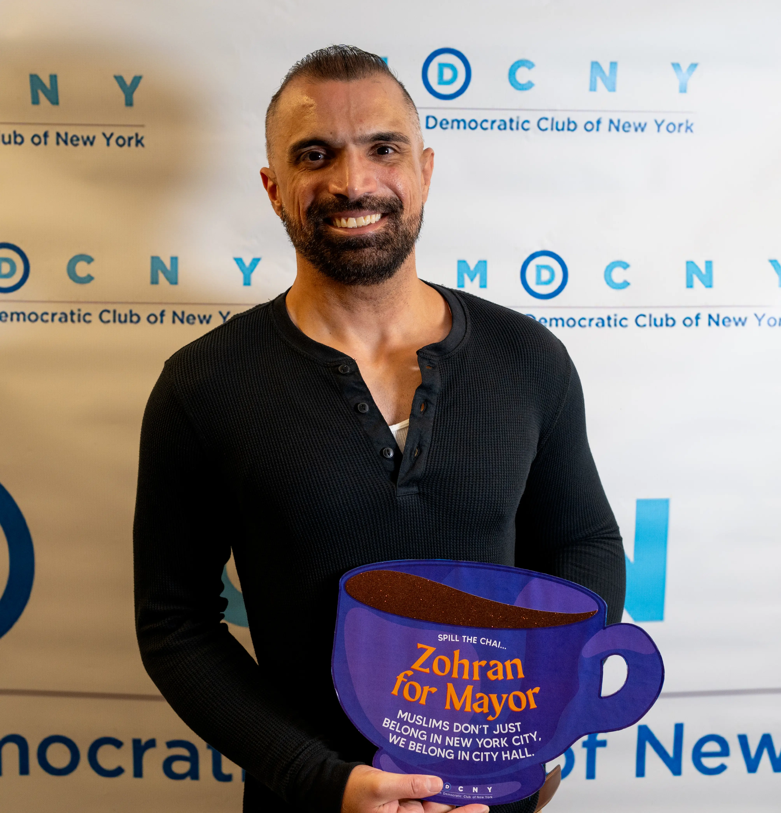

MEET Savail
New Yorkers hustle, adapt, and show up for one another. But we shouldn’t have to fight alone for basic needs like housing, healthcare, or safe infrastructure. Washington has failed us, and it shows in our daily lives.
I’m running for Congress here in New York City, not because I planned to, but because I believe this city deserves a federal government as bold and resilient as its people.
My background spans continents, from public schools in the Midwest to international classrooms in Tokyo and Singapore, where I learned to navigate cultures, challenge systems, and build bridges. Living and working in Mexico deepened my understanding of immigrant struggles and reinforced my belief in justice rooted in solidarity, humility, and inclusion.
But it wasn’t until I came to New York that things finally clicked. After a life spent searching for belonging, New York, a city of misfits, dreamers, and fighters, was the first place that ever truly felt like home. In its chaos and complexity, I found clarity. I wasn’t lost anymore.
The journey that brought me here gave me the tools to help others find belonging too, to their country. I’m running to end a system where democracy feels like monarchy, rigged for the ultra-wealthy, with one set of rules for them and another for us. They cry “socialism” when we demand fair and livable wages or healthcare, but stay quiet about corporate bailouts, tax breaks, and loopholes for the rich. That’s not capitalism; it’s feudalism in disguise. I’m fighting for a system that’s accessible, transparent, and actually works for the people it’s meant to serve. Everyone deserves to feel like they belong, and that they have the power to shape this country.
But after years in the commercial space, I came to a sobering realization: no amount of professional success can compensate for the emptiness of a system where so many are denied stability, dignity, and opportunity. That truth became personal just months ago, when I was scheduled to undergo life-saving brain surgery, only to have my health insurance deny coverage the day before the procedure.
I was lucky. With the help of friends, family, and a network of advocates, I got the care I needed. But I couldn’t stop thinking: what happens to those without that support? The answer is devastating and unacceptable. The work may have been exciting and cutting-edge, but it felt increasingly hollow in a country where democracy, economic mobility, and healthcare remain out of reach for millions. A truly thriving economy cannot exist without a functioning democracy that delivers for everyone.
After years of living and working in New York, I’ve seen firsthand how badly we need federal leadership that actually delivers. Our city pays more and gets less on healthcare, housing, infrastructure, and more. It’s time we changed that.
I’m running to bring that change with experience, urgency, and a deep commitment to people over profits and justice over gridlock.